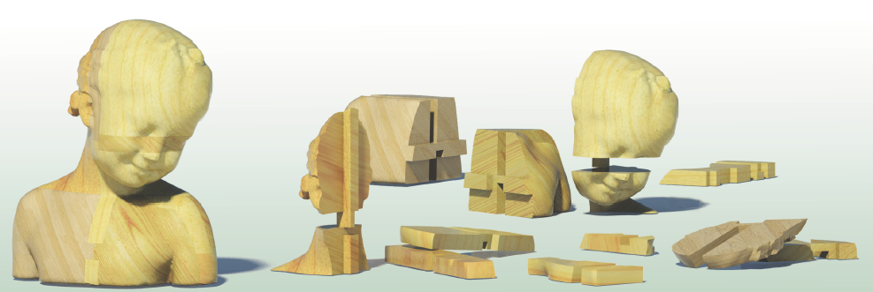
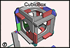

| SIGGRAPH2011 | ||
|
Making Burr Puzzles from 3D Models |
||
|
| ||
|
ACM Transactions on Graphics (SIGGRAPH 2011 issue), Vol. 30, No. 4, August 2011, pp. 97:1-97:8. |
||
|
|
||
|  | ||
|
Abstract
A 3D burr puzzle is a 3D model that consists of interlocking pieces with
a single-key property. That is, when the puzzle is assembled, all the
pieces are notched except one single key component which remains mobile.
The intriguing property of the assembled burr puzzle is that it is
stable, perfectly interlocked, without glue or screws, etc. Moreover, a
burr puzzle consisting of a small number of pieces is still rather
difficult to solve since the assembly must follow certain orders while
the combinatorial complexity of the puzzle's piece arrangements is
extremely high.
|
Paper (PDF, 23.6M) |
|||
|  |
Video (39M) |
|||
|
BibTex:
@article{xin-2011-making, title = {Making Burr Puzzles from 3D Models}, journal = {ACM Transactions on Graphics (SIGGRAPH 2011 issue)}, month = {August}, year = {2011}, volume = {30}, number = {4}, pages = {97:1-97:8}, } |
|
|||
|
|
||||